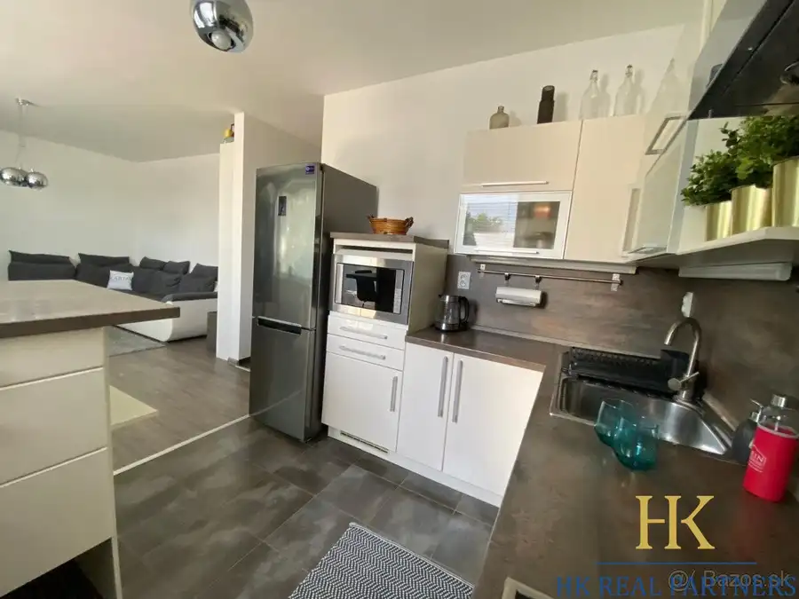
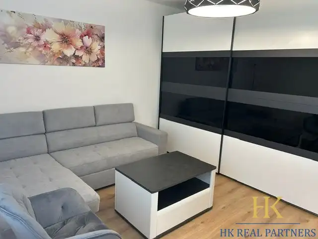
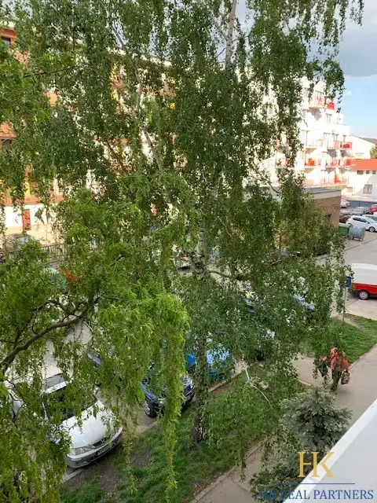
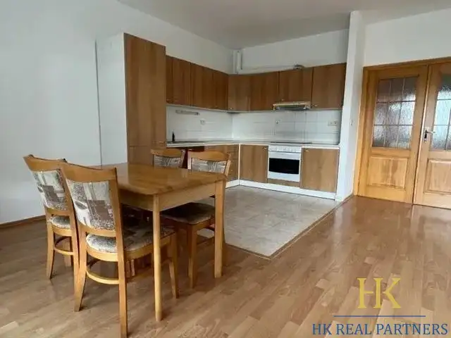

Aktuálna ponuka
9 nehnuteľností, predovšetkým byty. Každá má vlastnú stránku s fotkami, popisom a mapou.
Prezrieť ponukuHana AžaltovičováRealitná maklérka
Realitná maklérka · HK real partners s.r.o.
Predaj a prenájom nehnuteľností · Bratislava, Malacky, Stupava

 Byt9
175 000 €Predaj pekný 1 izbový byt, Podunajské Biskupice, s balkónom
Podunajské Biskupice, Bratislava
1-izbový34.2 m²6. podlažie
HK Real partners Vám ponúka 1 izbový byt, ulica Kazanská, Podunajské Biskupice, Bratislava II.Nachádza sa na 6. poschodí zo 7. S výťahom. S balkónom,…
Byt9
1 050 €Prenájom 4 izbový byt, priestranný, Gallayova ulica, zariadený, Dúbravka, BA IV
Dúbravka, Bratislava
4-izbový76 m²3. podlažie
HK Real Partners Vám ponúka na prenájom priestranný 4 izbový byt, ulica na Gallayova, Dúbravka, Bratislava IV. Rozloha: 76 m2. S výťahom. S lodžiou.…
Byt10
154 800 €Predaj útulnej garsónky, ulica Saratovská, po rekonštrukcii, Dúbravka, BA IV
Dúbravka, Bratislava
27.5 m²5. podlažie
HK Real Partners Vám ponúka exkluzívne na predaj garsónku, ulica Saratovská, Dúbravka, Bratislava IV. Rozloha: 27,5 m2. Nachádza sa na 5. poschodí z…
Byt9
175 000 €Predaj pekný 1 izbový byt, Podunajské Biskupice, s balkónom
Podunajské Biskupice, Bratislava
1-izbový34.2 m²6. podlažie
HK Real partners Vám ponúka 1 izbový byt, ulica Kazanská, Podunajské Biskupice, Bratislava II.Nachádza sa na 6. poschodí zo 7. S výťahom. S balkónom,…
Byt9
1 050 €Prenájom 4 izbový byt, priestranný, Gallayova ulica, zariadený, Dúbravka, BA IV
Dúbravka, Bratislava
4-izbový76 m²3. podlažie
HK Real Partners Vám ponúka na prenájom priestranný 4 izbový byt, ulica na Gallayova, Dúbravka, Bratislava IV. Rozloha: 76 m2. S výťahom. S lodžiou.…
Byt10
154 800 €Predaj útulnej garsónky, ulica Saratovská, po rekonštrukcii, Dúbravka, BA IV
Dúbravka, Bratislava
27.5 m²5. podlažie
HK Real Partners Vám ponúka exkluzívne na predaj garsónku, ulica Saratovská, Dúbravka, Bratislava IV. Rozloha: 27,5 m2. Nachádza sa na 5. poschodí z…
 BytNové10
Cena dohodouPrenájom 2 izbový byt, zariadený, Hradištná ulica, Devínska Nová Ves
Devínska Nová Ves, Bratislava
2-izbový44 m²2. podlažie
HK Real Partners Vám ponúka 2 izbový byt, ulica Hradištná, Devínska Nová Ves, Bratislava IV. Rozloha: 44 m2. Nachádza sa na 2. poschodí zo 4. Bez…
BytNové10
Cena dohodouPrenájom 2 izbový byt, zariadený, Hradištná ulica, Devínska Nová Ves
Devínska Nová Ves, Bratislava
2-izbový44 m²2. podlažie
HK Real Partners Vám ponúka 2 izbový byt, ulica Hradištná, Devínska Nová Ves, Bratislava IV. Rozloha: 44 m2. Nachádza sa na 2. poschodí zo 4. Bez…

Byt8 Cena dohodouPrenájom 2 izbový priestranný byt, ulica Okružná, ZIPAVA, v centre, Stupava Stupava 2-izbový58 m²1. podlažie HK Real Partners Vám ponúka pekný 2 izbový byt, Okružná ulica, novostavba Zipava, v Stupave, okres: Malacky. Rozloha: 58 m2. S balkónom. S murovanou…
BytNové10 1 100 €Prenájom krásny priestranný 3 izbový byt, samostatné izby, Gen. M. R. Štefánika, Malacky Malacky 3-izbový85 m²1. podlažie HK Real Partners Vám ponúka na prenájom priestranný krásny 3 izbový byt v novostavbe. V bytovom dome v Malackách. Ulica Gen. M.R.Štefánika. Nachádza…
Byt9 150 000 €Predaj pekný 2 izbový byt s balkónom, v centre, zariadený, Malacky Malacky 2-izbový50 m²1. podlažie HK Real partners Vám ponúka 2 izbový byt, ulica Záhorácka, Malacky. Nachádza sa na 1. poschodí z 7. Rozloha: 50 m2. S balkónom. S výťahom. Výborná… BytNové10
Cena dohodouPrenájom priestranný 2 izbový byt, novostavba, s terasou, Malacky
Malacky
2-izbový80 m²1. podlažie
HK Real Partners Vám ponúka krásny 2 izbový moderný byt v novom bytovom dome, ulica Gen. M.R.Štefánika, Malacky. Nachádza sa na prízemí. Rozloha: 80…
BytNové10
Cena dohodouPrenájom priestranný 2 izbový byt, novostavba, s terasou, Malacky
Malacky
2-izbový80 m²1. podlažie
HK Real Partners Vám ponúka krásny 2 izbový moderný byt v novom bytovom dome, ulica Gen. M.R.Štefánika, Malacky. Nachádza sa na prízemí. Rozloha: 80…

Byt6 Cena dohodouPrenájom priestranný 2 izbový byt, ulica Stromová, novostavba, garážové státie, lodžia, Kramáre, Nové Mesto, BA III Nové Mesto, Bratislava 2-izbový78 m²2. podlažie HK Real Partners Vám ponáka priestranný 2 izbový byt v novostavbe, ulica Stromová, Nové Mesto, Bratislava III.Nachádza sa na 2. poschodí z 5. S…Tomuto výberu zatiaľ nezodpovedá žiadna ponuka. Napíšte mi, čo hľadáte.
Volám sa Hana Ažaltovičová. Som realitná maklérka kancelárie HK real partners s.r.o. a pôsobím predovšetkým v lokalitách Bratislava, Malacky a Stupava (Bratislavský kraj).
9 nehnuteľností, predovšetkým byty. Každá má vlastnú stránku s fotkami, popisom a mapou.
Prezrieť ponukuBratislava, Malacky, Stupava a okolie. Ponuku si môžete prezrieť podľa lokality.
Nehnuteľnosti v lokaliteOdhad trhovej ceny, príprava prezentácie, obhliadky, zmluvy a odovzdanie nehnuteľnosti.
Dohodnúť stretnutieKaždý špendlík je jedna nehnuteľnosť z mojej ponuky. Kliknite a pozrite sa.
© prispievatelia OpenStreetMap
Na čo sa pýtate najčastejšie, skôr než sa stretneme.
Odhad trhovej ceny vychádza z aktuálnych ponúk a predajov v lokalite, nie z cenníkových tabuliek. Podmienky Vám poviem pri prvom telefonáte.
Najprv obhliadka a odhad ceny, potom príprava prezentácie (fotografie, popis, inzercia), obhliadky so záujemcami, rezervačná zmluva, kúpna zmluva, návrh na vklad do katastra a odovzdanie nehnuteľnosti. O každom kroku viete vopred.
Najrýchlejšie cez WhatsApp alebo telefón. Termín stretnutia alebo obhliadky dohodneme podľa Vás.